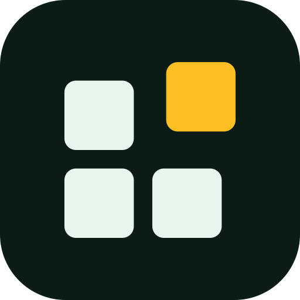
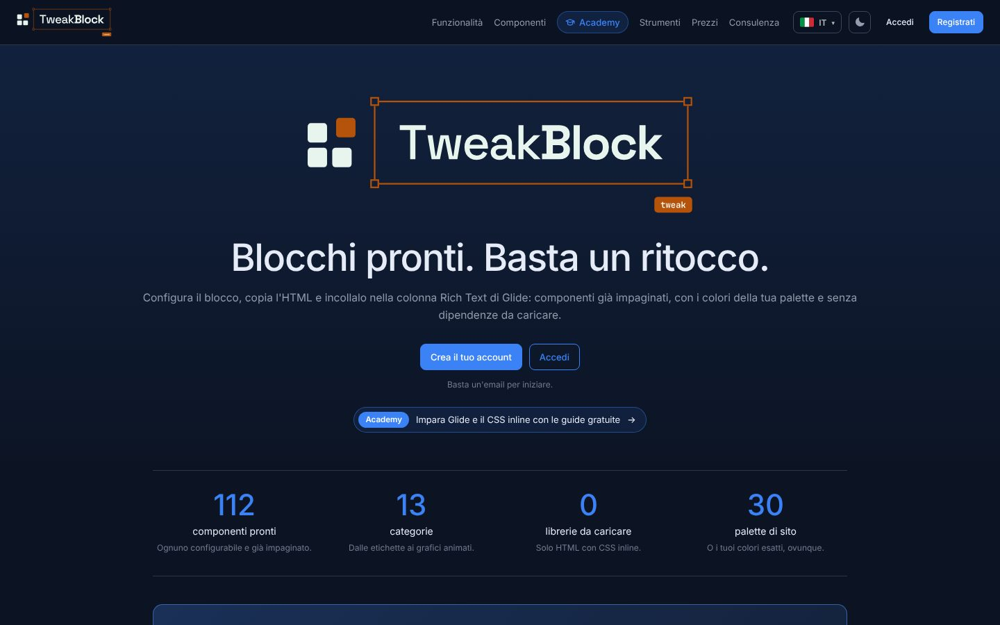

TweakBlock
tweakblock.comNato da un'esigenza concreta: sviluppando web app in Glide dovevo scrivere, confrontare e verificare il codice del componente Rich Text. Ho creato un editor online e, progetto dopo progetto, l'ho trasformato in uno strumento completo per chi costruisce app con Glide.
- Verifica della correttezza del codice e rilevamento degli script
- CSS inline, rimozione di righe e spazi vuoti, indentazione automatica
- Emulatore della struttura dell'editor di Glide
- Libreria di componenti pronti e archivio per il codice personalizzato
